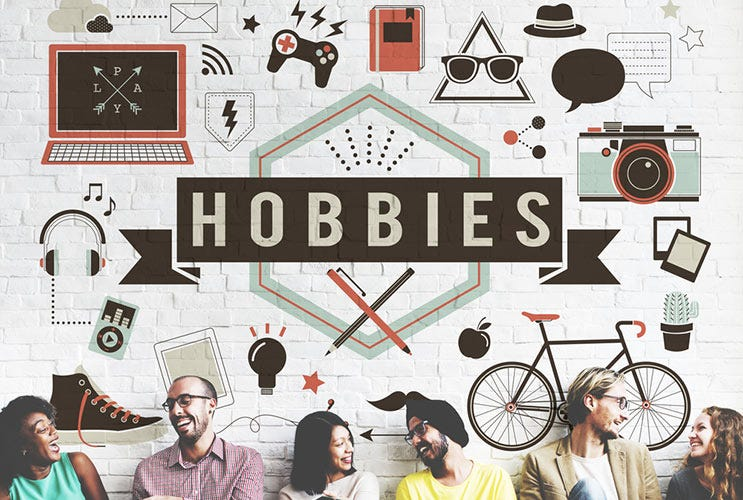

Yoo Gudrup!!
Alagiteh Wisdom Wedam is my name.
Address:[Navrongo,Saboro]
[Navrongo,Ghana]
Email:[alagitehwisdom22@gmail.com]
Phone:[0592711182]
Institution:Ghana Telecom University
Department:Department of Informatics and Computing
A Student Programmer/Web developer and Graphic designer
From the hallowed halls of Notre Dame Minor Seminary to the cutting-edge labs of Ghana Telecom University, my journey has been one of exploration and curiosity. This website is a culmination of that journey, a space where I share my learnings, ideas, and passions with the world. Join me as we delve into my new career, unraveling the mysteries and pushing the boundaries of what's possible,unraveling enigmas, and boldly pushing the frontiers of what humanity deems achievable. Together, let us traverse the uncharted territories of knowledge, forging new pathways and leaving an indelible mark on the tapestry of progress.
📌OBJECTIVES
Enthusiastic and dedicated web developer and graphic designer with a passion for creating visually appealing and user-friendly digital experiences. Currently pursuing a Bachelor of Science in Information Technology at Ghana Telecom University. Eager to leverage skills and education to contribute effectively to a dynamic team.
🧑🎓EDUCATION

Tetiary Institution
Bachelor of Science in Information Technology
Ghana Telecom University [Accra, Ghana]Expected Graduation: [November, 2026]
Senior High School
Notre Dame Seminary Senior High School, [Navrongo, Ghana]
Graduated: September 2022
Junior High School School
Moonlight International School, [Navrongo, Ghana]
Graduated: June 2019
HOBBIES
⭐SKILLS
Web Development: Proficient in HTML, CSS, JavaScript, and PHP. Graphic Design: Experienced in Adobe Photoshop. Familiarity with Content Management Systems (CMS) such as WordPress. Strong understanding of responsive design principles. Excellent problem-solving and troubleshooting skills. Ability to work effectively both independently and as part of a team. Strong communication and collaboration skills.
|
|